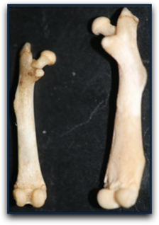
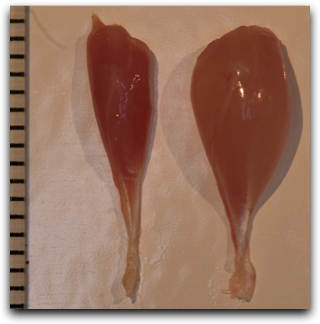

Skeletal Morphology in High-Activity Mice
We have a long-term collaborative project with Dr. Theodore Garland, Jr. in the Department of Biology at the University of California, Riverside, studying the effects of exercise and artificial selection on skeletal morphology and bone mechanics in house mice.
The Garland Lab has been artificially selecting mice for high levels of voluntary wheel running for more than 60 generations. These “high-runner” mice can run more than 25 km in one night, which is taxing to most physiological systems. In the lab, we are particularly interested in the effects (both separate and combined) of exercise and artificial selection on skeletal form, growth, physiology, and function.
Inbred High Activity Mini-Muscle Mice
A major project in the lab is the establishment of an inbred strain of high-activity mice that exhibit the mini-muscle phenotype. This project was begun in 2007. As of Fall 2014, we are over 20 generations into inbreeding and can now officially say that the strain is inbred.

The strain of mice that results from the project, which will both exhibit the mini-muscle allele and have genes enabling them to run great distances are a potential model organism for human musculoskeletal diseases and disorders. For example, mice can be crossed with other strains of mice known to have high or low bone mass to dissect the complex interaction between muscle function and normal bone growth.

Future experiments may include physiological measurements such as maximal oxygen consumption during strenuous exercise. High-runner mice generally have higher oxygen consumption, but this varies depending of the presence of the mini-muscle allele. Additionally, inbreeding may affect the physiological capacity of mice, so comparisons between the mice described in this experiment and “regular” high-runner mice will provide insights into the complex regulation of physiology. Research in the lab also concerns differences in bone shape and materials between mini-muscle mice and both high-runner mice and “standard” strains of lab mice.
Comparisons of shape and breaking strength with other types of mice will help us understand how genetics control the formation and, ultimately, function of the skeleton. In humans, for instance, it has been shown that certain bone shapes are more prone to fracture, and that these shape differences are genetically determined. By studying the same relationship in a model organism, in which we can have much greater experimental control, we will be able to better understand human biology.